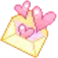
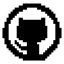
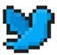

本室存放一名接线员的完整登记信息，他还在。字迹还没有开始褪。这里既是标本，也是这个站点真正的主人。
代号：SAKU / 夜班 · 长期在岗
职能：接收、记录、命名。偶尔在归档里偷偷留下自己写的东西。
所在：[待登记 · 城市或“不愿透露”]
状态：清醒。大部分时候。
会写字。把别人的、也把自己的情绪切成适合吞咽的大小，再重新拼回去。
会造小型装置。用最朴素的材料搭出一些可以点进去的房间。
会算。习惯把混乱的东西喂进一个流程，看它吐出可以被相信的数字。
研究过“人为什么会这样”。所以他知道守则第二条为什么必须是“不劝”。
他做的东西藏进了本站的另一个科室，被登记为“展品”。要看，请去 人格解体障碍博物馆。每一件都换了一个不属于它原本的名字。

邮箱：[待填 · you@example.com]
代码仓库：[待填 · github.com/你的用户名]
其他频道：[待填 · 主页 / 竞赛档案]他不保证会回。夜班的人回消息，和接电话是两种完全不同的力气。